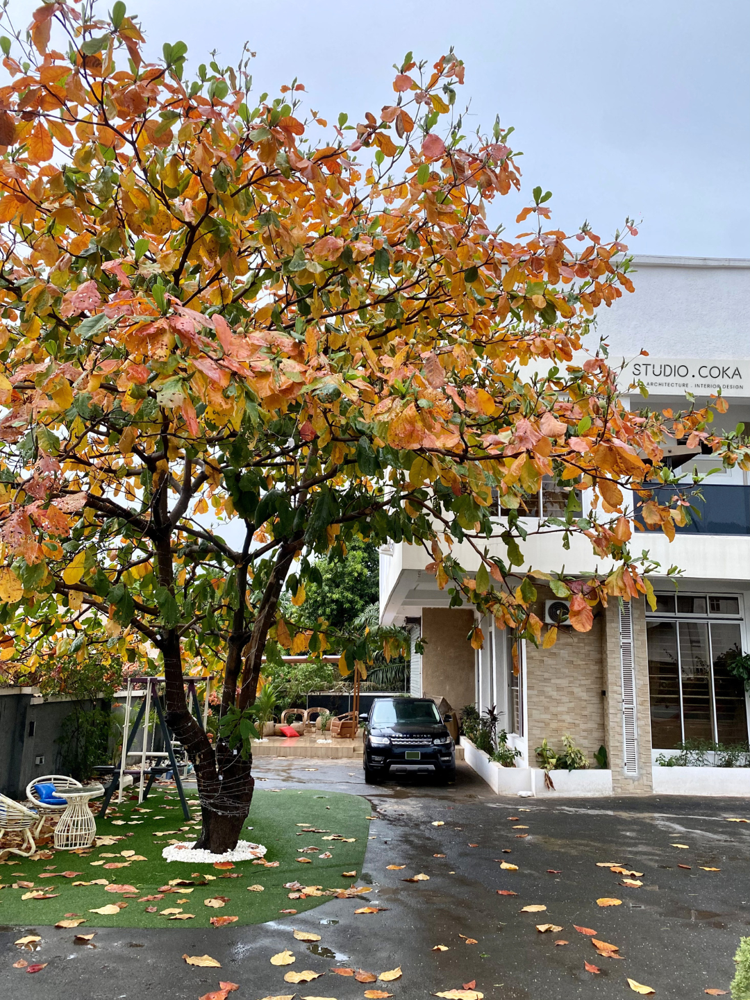
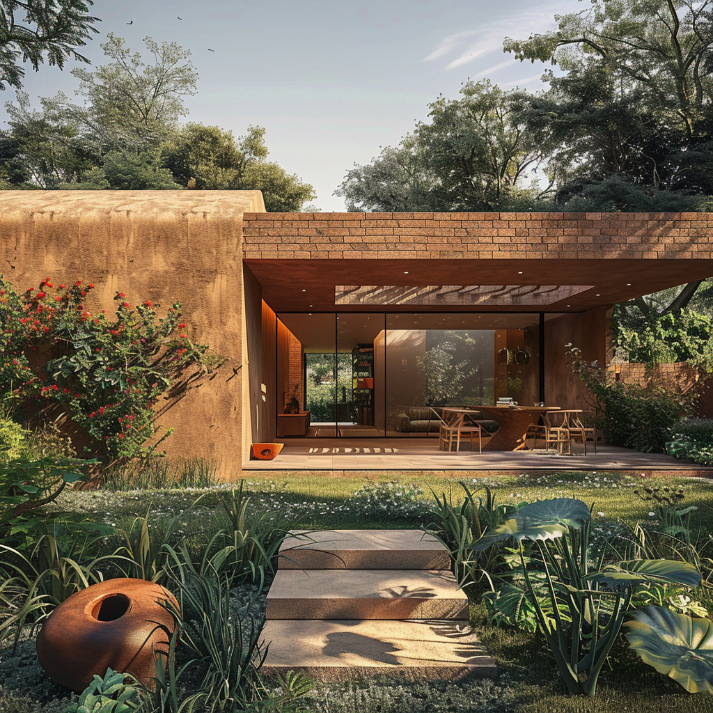

ARCHITECTURE & INTERIORS
Designing with place in mind.
Thoughtful spaces shaped by people, place, materials and climate.
ARCHITECTURE · DESIGN · IDEAS
I'm Crystal Kizor — architect, designer and entrepreneur exploring how we shape spaces, share knowledge and create meaningful opportunities.

My work sits at the intersection of architecture, design, knowledge and human possibility.
From shaping built environments to developing ideas, building initiatives and creating opportunities, I am interested in how thoughtful work can make a meaningful difference in the way people live, learn and connect.
Explore the wider vision ↗Architecture can do more than shape buildings. It can support connection, create opportunities and respond to the needs of the communities it serves.
 01 / PROJECT
01 / PROJECT
A community-focused project exploring the role of thoughtful spaces in everyday life. The project brings the built environment and community needs into the same conversation.
Discuss a project

Exploring the relationship between people, place, materials and the built environment.
ARCHITECTURE & INTERIORS
Thoughtful spaces shaped by people, place, materials and climate.
Interested in the thinking behind the spaces? Explore the ideas and research ↓
Exploring the relationship between homes, natural surroundings, materials and the experience of space.


An exploration of residential architecture and the connection between built spaces and nature.
A growing ecosystem of ventures, platforms and initiatives, each with its own focus.

Architecture, interior design and construction shaped around people, place and climate.
Explore studio ↗
Furniture and product design exploring function, material, context and contemporary African ideas.
Explore ELEvated ↗
Expanding access to education and creating opportunities for children and young people.
Discover the mission ↗
An architecture education and media platform for learning, professional growth and better careers.
Explore ideas ↗
A Christian youth movement centred on identity, healing, freedom, purpose and life in Christ.
Learn more ↗Research, writing, content and conversations exploring architecture, design and beyond.
Discover my thinking ↗Beyond the spaces we inhabit are the decisions, questions and ideas that shape how we live and work.
Research and inquiry into architecture, design and the environments we create.
Writing, content and conversations that make complex ideas accessible and encourage new perspectives.
Talks on architecture, climate-responsive design, African cities, entrepreneurship and the built environment.
Speaking enquiries ↗Learning and media for architects and built-environment professionals through TEA.
THE NEXT CONVERSATION
Interested in working together, inviting me to speak, or learning more about one of these initiatives?
Get in touch ↗